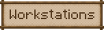
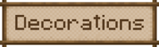
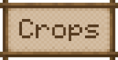
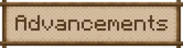
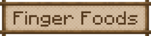
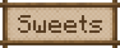
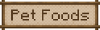

Welcome to the Farmer's Delight Wiki!
"It's time to farm a little bit of everything!" - vectorwing
Fandom WikiAbout the Mod
"Farmer's Delight is a mod that gently expands upon farming and cooking in Minecraft. Using a simple cooking system and a few familiar ingredients, you'll be able to prepare a wide variety of hearty meals: from sandwiches to salads and stews, from beautiful desserts to mouth-watering feasts, no ingredient will be left behind in your kitchen! It also introduces a rich set of utilities: a way to improve the very soil your crops grow in, a brand new kind of tool to scavenge resources with, cute decorations for your builds, and many blocks and items to help you on your adventure!"
Mod Content
   Food Types
  Downloads
Forge (Original)
ModrinthCurseForgeFabric (1.17.1 - 1.20.1)
ModrinthCurseForgeFabric, Quilt (1.20.1+)
ModrinthCurseForge